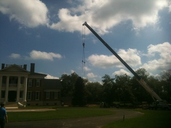

Crane tree moving & installation
When a boxed root ball is too heavy or the setting is too tight for a spade truck, a crane lifts the tree over the obstacle instead. Their archive shows crane picks over houses and boxed magnolias set beside brick homes.
Call (770) 337-3740 →